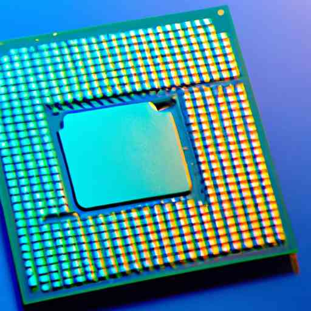

The Dawn of a New Chip Era: Exploring Wafer Scale Chips for Artificial Intelligence

In the heart of Silicon Valley, a tech giant is revolutionizing the world of computer chip manufacturing. Seeking speed, efficiency, and unprecedented computational power, they have embarked on a bold venture toward perfecting an innovative method of developing chips known as wafer scale integration. This new approach has the potential to significantly enhance the future of Artificial Intelligence (AI).
Unveiling the Wafer Scale Integration
Before embarking on the wafer scale discussion, let's establish a fundamental understanding of standard chip making. Traditionally, semiconductor manufacturers produce chips by etching many circuit patterns onto a large silicon wafer. Each chip is then cut out of the wafer and encapsulated into a package, ready for installation in a device.
However, in wafer scale integration, the entire silicon wafer serves as a single massive chip, rather than being cut into smaller ones. This approach magnifies the processing capability significantly, opening endless possibilities in the realm of AI.
The Protagonists of the Wafer Scale Chip Story
Cerebras Systems, a Californian AI startup, has been pushing the boundaries of chip manufacturing through developing the Wafer Scale Engine, the world's largest computer chip to date. Measuring over 8x8 inches and featuring 1.2 trillion transistors, Cerebras' wafer scale chip is roughly the size of an iPad and significantly larger than the contemporary GPU-based chips, which typically contain a mere few billion transistors.
To give you an idea of its abilities, this incredible tool from Cerebras can handle complex AI modeling and computations at a breakneck speed, far higher than the standard cluster of GPU-based chips. Consequently, it has been attracting interest from renowned establishments like the Department of Energy's Argonne National Laboratory.
Challenges and Opportunities in Wafer Scale Integration
Like any other technological breakthrough, wafer scale integration isn't a walk in the park. Chip production frequently faces defects, and even minor flaws on a traditional small chip are problematic. Imagine the risk involved in creating one colossal chip—the possibility of encountering a defect is exponentially greater.
However, Cerebras Systems has ingeniously tackled this issue through building redundancy into its design—having extra circuits to make up for any possible defects—showcasing the innovative spirit driving this sector.
Another significant challenge is heat management. The larger the chip, the harder it is to dispel heat, leading to potential sustainability issues. Yet again, Cerebras Systems demonstrated pioneering ingenuity by developing a novel water-cooling system, designed to circumvent this thermal challenge.
Despite these hurdles, the potential benefits of wafer scale chips in AI applications are immense. Imagine running advanced machine learning models faster than ever before, saving time and resources for researchers and scientists. This speed could revolutionize healthcare by allowing quicker analysis of complex medical data, even seismology, by speeding up the processing of seismic data. Much like the meteoric rise of semiconductors in the late 20th century, wafer scale integration could shape the future of AI.
Riding the Waves of Transformation
Wafer scale chips are on the verge of becoming the next big innovation avenue in chip technology. Guided by pioneering companies like Cerebras Systems, wafer scale integration is set to transform the tech landscape in the near future.
This development in semiconductor technology truly showcases how, through innovation and creativity, we can leapfrog challenges to open new horizons. As we continue to ride this transformative wave, we look forward to unlocking untold possibilities and pushing artificial intelligence to new frontiers. Through the lens of wafer scale chips, the future of AI seems to be nothing but exceptionally bright.